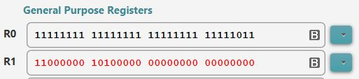

- As you may have noticed,
the same
numerical value
has
different
representations
in
different codes
- For example:
- The 2's complement code
for the value 5 (five) is:
00000000000000000000000000000101
- The IEEE 754 code
for the same
value 5 (five) is:
01000000101000000000000000000000Because:
Meaning of each bit according to the IEEE 754 format: S EEEEEEEE MMMMMMMMMMMMMMMMMMMMMMM 0 10000001 01000000000000000000000
Sign: + (positive) Mantissa: 1.01000000000000000000000 Exponent: 10000001 = 129(10) = 127(10) + 210 The value represented is: 1.01000000000000000000000 × 22 = 101.000000000000000000000 = 101 = 5(10)
- The 2's complement code
for the value 5 (five) is:
- When you use int
and float data types
in your high level language program
(e.g. Java) and
you use the following
statement:
int i; float f; i = (int) f; // Assign a float representation to an int type variable f = (float) i; // Assign an int representation to an float type variableThe assignment statement must first convert one representation into another representation before doing the assignment !
- For example, the statement
i = (int) f;:
int i; float f; i = (int) f;in the above code fragment must perform the following steps:
(1) convert the float (IEEE 754) representation stored in f into the int (2's complement) representation for the same value (2) Store the int (2's complement) representation in the variable i
- Another example: the statement
f = (float) i;:
int i; float f; i = (int) f;in the above code fragment must perform the following steps:
(1) convert the int (2's complement) representation stored in i into the float (IEEE 754) representation for the same value (2) Store the float (IEEE 754) representation in the variable f
- Just like there is a
conversion procedure
to convert between:
binary number system <---> 2's complement codethere is a conversion procedure to convert between:
2's complement representation <---> IEEE 754 (float) representation (integer) (float)But the int <--> float conversion procedure is much more complex.
The conversion algorithms use bit manipulation operations that you have not had before.
So I will not give the complete algorithms, but describe the algorithms only at a high level (mainly to sastify students' curiocity)....
- Before delving into the algorithm, you need to realize that:
- An int typed value is expressed in the 2's complement code
- A float typed value is expressed in the IEEE 754 code
- The algorithm to
convert from
an int representation
to a float representation
is:
1. Convert the int representation into a sign and a positive binary number 2. Convert the positive binary number to a fixed point representation where the integral part = 1.xxxxx (This step uses shift operations - you shift the decimal point to the left until you find the most significant 1 bit in the binary number) Let M be the mantissa with the leading 1 bit omitted Let E be the exponent of the fixed point representation 3. Express the exponent E in excess 127 code 4. Assemble: Sign Exponent Mantissa into a IEEE 754 respresentationExample:
Let's convert the value -5 from the int representation to the float representation. Let me show you the representation of -5 first: -5 in the int representation is: 11111111111111111111111111111011 -5 in the float representation is: 11000000101000000000000000000000 (See: click here) The question is: how do you go from 11111111111111111111111111111011 --> 11000000101000000000000000000000
Here's how to convert from int representation to float representation: 1. Convert 11111111111111111111111111111011 into a sign and a positive binary number: Sign = negative Positive binary number = 00000000000000000000000000000101 (flip the bits and add 1 !!!) = 101 (ignore leading zero's for simplicity) 2. Convert 101 into a fixed point representation where the integral part = 1.xxxxx: The step is done by shifting: initially: 101 = 101.000..00 exponent 0 shift decimal point left: 10.1000..00 exponent 1 shift decimal point left again: 1.01000..00 exponent 2 Done: 1.01000000..00 with exponent 2 So M = 01000...00 (omitting the leading "1" bit !!!) E = 2 3. Express exponent E in excess 127 code: 2 expressed in exceess 127 is: 10000001 (= 01111111 + 00000010) 4. Assemble: Sign Exponent Mantissa 1 10000001 01000000000000000000000 Remove the spaces between the bits and you get the answer: 11000000101000000000000000000000
- It is possible to
write
a function
in a high level programming language
to
convert between
int and
float.
Because you have not had shift operation before, I won't discuss the algorithm in code form....
- Furthermore,
because
integer <--> floating point conversion
occurs very frequently in
computer programs,
e,g,:
int radius; double area; area = 3.14 * radius * radius; // Can you detect the int --> float conversion ? // int radius needs to be converted to float // before it can be used in the computation !!!most CPU's provide machine instructions that perform the int <--> float conversions
- I will omit the float ---> int conversion algorithm --- it's similar to the algorithm above and also uses shift operations
- I know you have not discussed
assembler programming yet,
but I like to show you
the effect of
the conversion instructions
(i.e.: I like to show you that the computer
has instructions that
can perform the conversion)
- Here is the source code of
a C program where
we assign an int variable
to a float variable:
// file: /home/cs255/cs255/c-asm/int2float.c on host cs255host1 // ssh -X cs255@cs255host1, User: cs255, passwd: abc123 int x; float f; int main() { x = 4; f = x; // Assign int var to a float var ---> will convert int to float ! } - We can get the translated
assembler code
of ths C program using
the following command:
gcc -S int2float.cThis will generate the assembler program file int2float.s.
Look inside the int2float.s file and you will see these instructions:
... vcvt.f32.s32 s15, s15 // This instr converts an int repr to a float repr !! ....Specifically: the instruction vcvt.f32.s32 is the ARM processor's instruction to convert an integer representation to a float representation
(It must be done using an "s" register)
- We have a
Raspberry Pi in the department
(cs255host1)
where I can show you the
ARM instruction vcvt.f32.s32
to convert an
integer representation
to the equivalent float representation:
// Program: /home/cs255/cs255/int2float.s on cs255host1 mov r0, #-5 // Convert int -5 vmov s15, r0 // Move r0 to float processor vcvt.f32.s32 s15, s15 // Convert int code to float code vmov r1, s15 // Move float code to r1The vcvt.f32.s32 is the ARM processor's instruction to convert an integer representation to a float representation
When you run the program, you will see this result in the registers:
 The register R0 contains the 2s complement representation for the value 5
The register R0 contains the IEEE 754 representation for the value 5.0
- Example Program:
(Demo above code)

- Prog file: /home/cs255/cs255/int2float.s on host cs255host1
How to run the program:
- To run the program:
use
EGTAPI !!!
- Download EGTAPI from: http://www.cs.emory.edu/~egtapi/download.html
- After installation, run EGTAPI on your laptop
- Login on EGTAPI
- Select the cs255host1 (it's the last name of the list of machine to select from)
- Use username: cs255
- Use passwdord: abc123
- Conclusion:
- All modern CPU's has machine instructions that can perform conversions between int <---> float representations
Comment:
- I only showed the
int --> float conversion
machine instructions for the
Intel and the
ARM processors in the examples
above.
- There is a corresponding
float --> int
conversion instruction:
ARM assembler code: vcvt.s32.f32